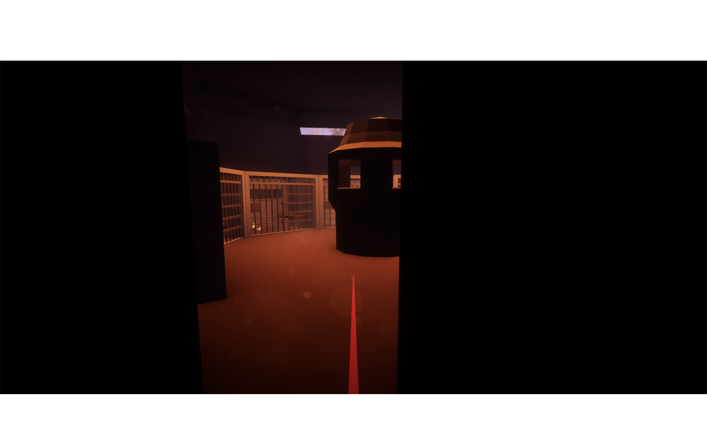
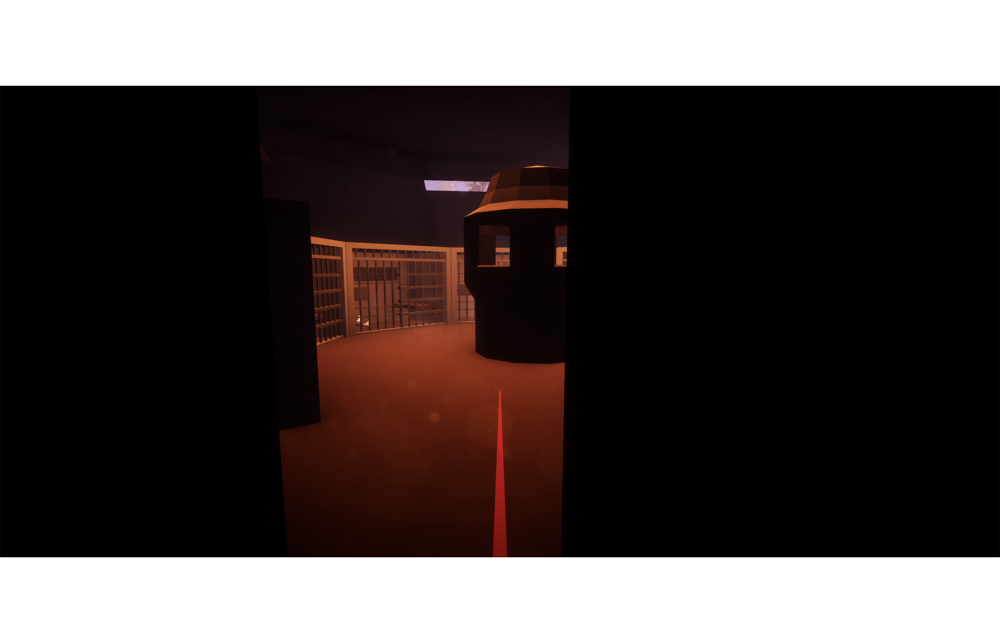
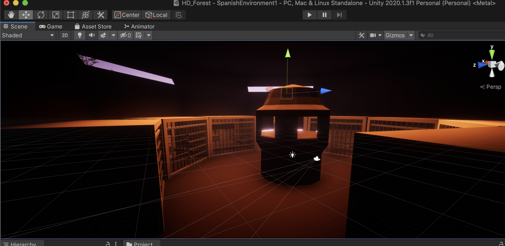
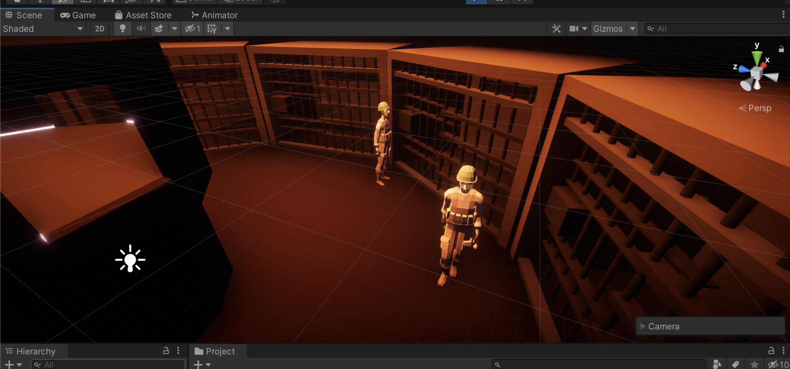
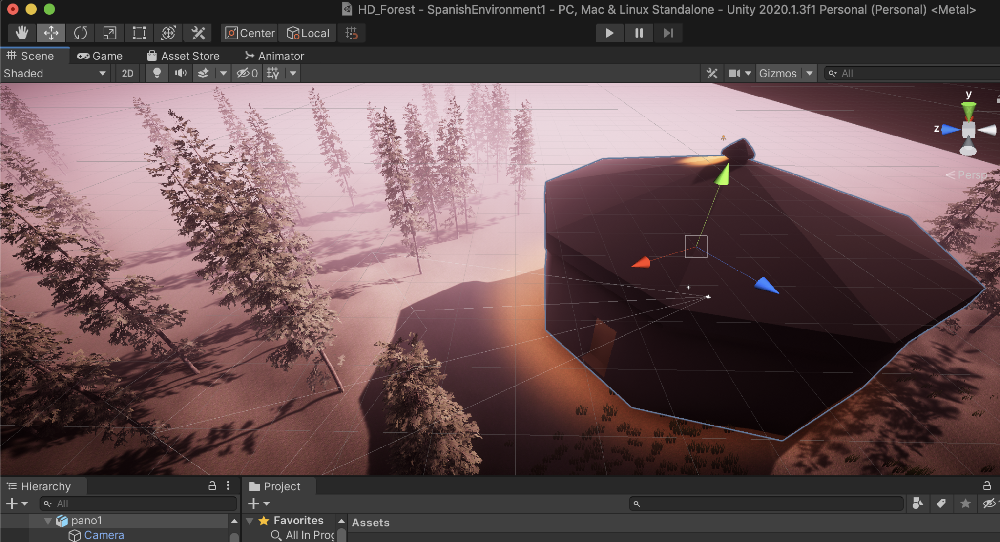

Spanish Learning in VR
Link to Github Repo / Built with C# in Unity and Blender
In this simulation, a student decides how to respond to political figure Sanchez Mazas's famed prison break. Through the experience, the student also learns the Spanish names of food items and is exposed to imperative sentence structure. Premise developed by professors at Southern Connecticut State University. Simulation built by Noah Shapiro, Zodi Chalat, and myself. Screenshots of the current iteration of the experience are below.
 



Among other things, I wrote the code for the interaction with vocabulary items. Upon directing their controller at a vocabulary item, the player will see a pop-up with the Spanish name of the object, as well as directions to hear a sound clip of the name spoken aloud. See a glimpse of this feature in the gif below, in the pre-experience "training" world, where players familiarize themselves with the basic VR interactions.

A few more screenshots from development:
  This experience was developed entirely remotely during Fall 2020. It was first demoed in person in November.